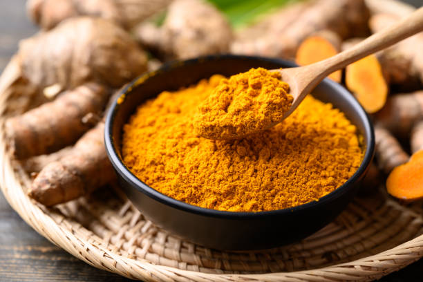

ACUPRESSURE SLIPPERS FROM PERKANGAI NAAR
ACUPRESSURE SLIPPERS FROM PERKANGAI NAAR WITH NEEM,TURMERIC,AND FISH TANK STONES
INTRODUCTION :
Acupressure Slippers from Perkangai Naar are special slippers designed to help improve your health by stimulating pressure points on your feet. These slippers have small raised bumps on the soles that apply gentle pressure while you walk or stand. This helps to improve blood circulation, reduce stress, and relieve pain, especially in your feet, muscles, and joints.
They are easy to use and can be worn at home or while on the go. By regularly wearing these slippers, you may feel more relaxed, energized, and less fatigued. They offer a simple, natural way to support your overall well-being.
PROPERTIES OF ACUPRESSURE SLIPPERS FROM PERKANGAI NAAR :
-
Eco-friendly :
The scrubber is biodegradable and an environmentally conscious alternative to synthetic exfoliating tools.
-
Massage
The textured surface of the scrubber stimulates the skin, promoting relaxation and relieving tension.
-
Skincare :
The scrubber can be used with cleansing products to enhance their effectiveness.
-
Hypoallergenic
The scrubber is suitable for sensitive skin, avoiding irritations and allergic reactions.
-
Anti-inflammatory:
Perkangai Naar has anti-inflammatory properties, which can help reduce swelling and pain.
-
Antioxidant:
Rich in antioxidants, Perkangai Naar can help protect the body from free radicals and oxidative stress.
PROCESS OF ACCUPRESSURE SLIPPERS FROM PERKANGAI NAAR WITH NEEM,TURMERIC,AND FISH TANK STONES :
The Acupressure Slippers from Perkangai Naar combine the therapeutic benefits of acupressure with the natural healing properties of neem, turmeric, and fish tank stones. Here's a simple breakdown of how these slippers work:

- Acupressure Therapy:
The slippers are designed with raised nodes on the sole that stimulate specific acupressure points on your feet. When you walk or stand, the pressure from these nodes helps to improve circulation, reduce stress, and promote relaxation.
- Neem:
Neem is known for its antibacterial, anti-inflammatory, and detoxifying properties. In the slippers, neem-infused materials may help in soothing the skin and reducing any foot-related issues like fungal infections or irritation. Neem's natural healing qualities can contribute to maintaining foot health.
- Turmeric:
Turmeric has powerful anti-inflammatory and antioxidant properties. It can help in reducing pain, inflammation, and swelling. In the slippers, turmeric may provide additional therapeutic benefits by easing joint pain or muscle soreness when combined with the acupressure massage.
- Fish Tank Stones:
Fish tank stones are used for their natural healing properties. These stones are believed to provide grounding and balance. When incorporated into the slippers, they may help in calming the body, improving energy flow, and enhancing the overall therapeutic effect of the acupressure.
Process:
- Step 1: Collection Of Perkangai Naar,Neem,Turmeric And Fish Stones
- Step 2: Make extraction of neem and turmeric by boiling.
- Step 3: Soak the naar in this extraction for 24 hours.
- Step 4: After that dry the naar and then leveling it and make slipper
BENEFITS OF ACUPRESSURE SLIPPERS :
The Acupressure Slippers from Perkangai Naar offer several health benefits by combining acupressure with the natural healing properties of neem, turmeric, and fish tank stones.
- Improved Circulation:
The acupressure nodes stimulate pressure points on the feet, promoting better blood flow throughout the body. This can help reduce fatigue and improve overall energy levels.
- Stress Reduction:
The gentle pressure applied by the slippers helps activate the body's relaxation response, reducing stress and anxiety. This leads to a calmer mind and an improved sense of well-being.
- Pain Relief :
The acupressure effect can help alleviate foot pain, joint pain, and muscle soreness. Additionally, the anti-inflammatory properties of turmeric help in reducing pain and swelling, especially in the feet and legs.
- Enhanced Detoxification:
Neem is known for its detoxifying properties. It helps purify the body by fighting harmful bacteria and reducing infections, which can promote healthier skin and feet.
- Anti-inflammatory Effects:
Turmeric has strong anti-inflammatory properties, which can help reduce inflammation in the feet, joints, and muscles, providing relief from conditions like arthritis.
- Improved Foot Health:
The slippers can prevent foot problems like fungal infections, calluses, and corns due to the antibacterial and antifungal properties of neem. They also help maintain overall foot hygiene.
- Better Sleep:
By reducing stress and relaxing the body, these slippers can help improve sleep quality, making it easier to fall asleep and rest peacefully.
- Increased Energy Levels:
The combined effect of acupressure and the natural elements in the slippers can improve overall vitality and energy, helping you feel more energized throughout the day.
- Mental Clarity:
Regular use of the slippers can enhance mental clarity and focus by reducing stress and promoting relaxation.